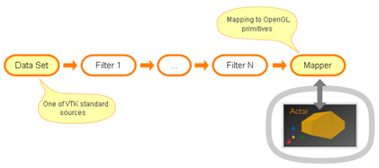
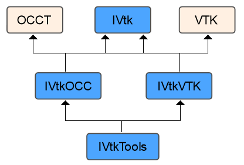
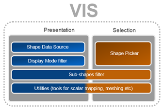
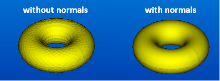
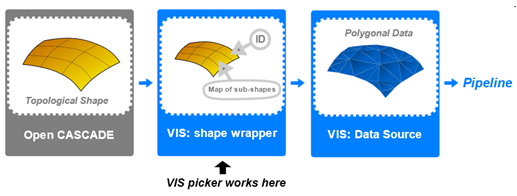

VIS component provides adaptation functionality for visualization of OCCT topological shapes by means of VTK library. This User’s Guide describes how to apply VIS classes in application dealing with 3D visualization based on VTK library.

3D visualization based on VTK library
There are two ways to use VIS in the application:
Use a high-level API. It is a simple scenario to use VTK viewer with displayed OCCT shapes. It considers usage of tools provided with VIS component such as a specific VTK data source, a picker class and specific VTK filters. Basically, in this scenario you enrich your custom VTK pipeline with extensions coming from VIS.
Use a low-level API. It is an advanced scenario for the users with specific needs, which are not addressed by the higher-level utilities of VIS. It presumes implementation of custom VTK algorithms (such as filters) with help of low-level API of VIS component. This document describes both scenarios of VIS integration into application. To understand this document, it is necessary to be familiar with VTK and OCCT libraries.
Component Architecture
Common structure
VIS component consists of the following packages:
IVtk – common interfaces which define the principal objects playing as foundation of VIS.
IVtkOCC – implementation of interfaces related to CAD domain. The classes from this package deal with topological shapes, faceting and interactive selection facilities of OCCT;
IVtkVTK – implementation of interfaces related to VTK visualization toolkit;
IVtkTools – high-level tools designed for integration into VTK visualization pipelines.

Dependencies of VIS packages
The idea behind the mentioned organization of packages is separation of interfaces from their actual implementations by their dependencies from a particular library (OCCT, VTK). Besides providing of semantic separation, such splitting helps to avoid excessive dependencies on other OCCT toolkits and VTK.
IVtk package does not depend on VTK libraries at all and needs OCCT libraries only because of collections usage (TKernel library);
Implementation classes from IVtkOCC package depend on OCCT libraries only and do not need VTK;
IVtkVTK package depends on VTK libraries only and does not need any OCCT functionality except collections.

Dependencies of VIS packages
Basically, it is enough to use the first three packages in the end user’s application (IVtk, IVtkOCC and IVtkVTK) to be able to work with OCCT shapes in VTK viewer. However, IVtkTools package is also provided as a part of the component to make the work more comfortable.
IVtk package
IVtk package contains the following classes:
IVtk_Interface – Base class for all interfaces of the component. Provides inheritance for Handle (OCCT “smart pointer”) functionality.
IVtk_IShape – Represents a 3D shape of arbitrary nature. Provides its ID property. Implementation of this interface should maintain unique IDs for all visualized shapes. These IDs can be easily converted into original shape objects at the application level.
IVtk_IShapeData – Represents faceted data. Provides methods for adding coordinates and cells (vertices, lines, triangles).
IVtk_IShapePickerAlgo – Algorithmic interface for interactive picking of shapes in a scene. Provides methods for finding shapes and their parts (sub-shapes) at a given location according to the chosen selection mode.
IVtkOCC_ShapePickerAlgo – Implementation of interactive picking algorithm. It provides enabling/disabling of selection modes for shapes (IVtk_IShape instances) and picking facilities for a given position of cursor.
IVtkOCC_ViewerSelector – Interactive selector, which implements Pick() methods for the picking algorithm IVtkOCC_ShapePickerAlgo and connects to the visualization layer with help of abstract IView interface.
IVtkOCC_ViewerSelector is a descendant of OCCT native SelectMgr_ViewerSelector, so it implements OCCT selection mechanism for IVtkVTK_View (similarly to StdSelect_ViewerSelector3D which implements SelectMgr_ViewerSelector for OCCT native V3d_View). IVtkOCC_ViewerSelector encapsulates all projection transformations for the picking mechanism. These transformations are extracted from vtkCamera instance available via VTK Renderer. IVtkOCC_ViewerSelector operates with native OCCT SelectMgr_Selection entities. Each entity represents one selection mode of an OCCT selectable object. ViewerSelector is an internal class, so it is not a part of the public API.
IVtkOCC_SelectableObject – OCCT shape wrapper used in the picking algorithm for computation of selection primitives of a shape for a chosen selection mode.
IVtkVtk package
IVtkVTK package contains implementation of classes depending on VTK:
IVtkVTK_ShapeData – Implementation of IVtk_IShapeData interface for VTK polydata. This class also stores information related to sub-shape IDs and sub-shape mesh type IVtk_MeshType (free vertex, shared vertex, free edge, boundary edge, shared edge, wireframe face or shaded face). This information is stored in VTK data arrays for cells.
IVtkTools package gives you a ready-to-use toolbox of algorithms facilitating the integration of OCCT shapes into visualization pipeline of VTK. This package contains the following classes:
IVtkTools_ShapeDataSource – VTK polygonal data source for OCCT shapes. It inherits vtkPolyDataAlgorithm class and provides a faceted representation of OCCT shape for visualization pipelines.
IVtkTools_ShapeObject – Auxiliary wrapper class for OCCT shapes to pass them through pipelines by means of VTK information keys.
IVtkTools_DisplayModeFilter – VTK filter for extracting cells of a particular mesh type according to a given display mode IVtk_DisplayMode (Wireframe or Shading).
IVtkTools_SubPolyDataFilter – VTK filter for extracting the cells corresponding to a given set of sub-shape IDs.
Additionally, IVtkTools package contains auxiliary methods in IVtkTools namespace. E.g. there is a convenience function populating vtkLookupTable instances to set up a color scheme for better visualization of sub-shapes.
Using high-level API (simple scenario)
OCCT shape presentation in VTK viewer
To visualize an OCCT topological shape in VTK viewer, it is necessary to perform the following steps:
Create IVtkOCC_Shape instance (VIS wrapper for OCCT shape) and initialize it with TopoDS_Shape object containing the actual geometry:
Create VTK polygonal data source for the target OCCT topological shape and initialize it with created IVtkOCC_Shape instance. At this stage the faceter is implicitly plugged:
To colorize different parts of a shape according to the default OCCT color scheme, it is possible to configure the corresponding VTK mapper using a dedicated auxiliary function of IVtkTools namespace:
To set up application-specific colors for a shape presentation, use InitShapeMapper function with an additional argument passing a custom lookup table:
It is also possible to bind custom colors to any sub-shape type listed in IVtk_MeshType enumeration. For example, to access the color bound to free edge entities, the following calls are available in IVtkTools namespace:
Here R, G, B are double values of red, green and blue components of a color from the range [0, 1]. The optional parameter A stands for the alpha value (the opacity) as a double from the same range [0, 1]. By default alpha value is 1, i.e. a color is not transparent.
Using color scheme of mapper
As VTK color mapping approach is based on associating scalar data arrays to VTK cells, the coloring of shape components can be turned on/off in the following way:
Mapper->ScalarVisibilityOn(); // use colors from lookup table
Mapper->ScalarVisibilityOff(); // use a color of actor’s property
For example, the scalar-based coloring can be disabled to bind a single color to the entire VTK actor representing the shape.
Display modes
The output of the shape data source can be presented in wireframe or shading display mode. A specific filter from class IVtkTools_DisplayModeFilter can be applied to select the display mode. The filter passes only the cells corresponding to the given mode. The set of available modes is defined by IVtk_DisplayMode enumeration.
For example, the shading representation can be obtained in the following way:
vtkSmartPointer<vtkDataSetMapper> M = vtkSmartPointer<vtkDataSetMapper>::New();
M->SetInputConnection(DMFilter->GetOutputPort());
By default, the display mode filter works in a wireframe mode.
TIP: to make the shading representation smooth, use additional vtkPolyDataNormals filter. This filter must be applied after the display mode filter.

Interactive selection
IVtkTools package provides IVtkTools_ShapePicker class to perform selection of OCCT shapes and sub-shapes in VTK viewer and access the picking results. The typical usage of IVtkTools_ShapePicker tool consists in the following sequence of actions:
Create a picker and set its renderer to your active VTK renderer:
Activate the desired selection mode by choosing the corresponding sub-shape types from IVtk_SelectionMode enumeration. For example, the following call allows selection of edges on all selectable shape actors of the renderer:
aPicker->SetSelectionMode(SM_Edge);
If it is necessary to limit selection by a particular shape actor, one can use the mentioned SetSelectionMode method with IVtk_IShape handle or vtkActor pointer as the first argument:
By default, the renderer passed in the step 1 is used. In order to perform pick operation for another renderer an additional optional parameter can be specified:
These methods return a single top picked actor or a shape by default. To get all the picked actors or shapes it is necessary to send “true” value in the optional Boolean parameter:
This method also returns a single ID of a top-level picked sub-shape and has the same optional Boolean parameter to get all the picked sub-shapes of a shape:
It should be noted that it is more efficient to create a sole picker instance and feed it with the renderer only once. The matter is that the picking algorithm performs internal calculations each time the renderer or some of its parameters are changed. Therefore, it makes sense to minimize the number of such updates.
OCCT picking algorithm IVtkTools_ShapePicker calculates a new transformation matrix for building of projection each time some parameters of a view are changed. Likewise, the shape selection primitives for each selection mode are built once an appropriate selection mode is turned on for this shape in SetSelectionMode method.
WARNING: VIS picker essentially works on the initial topological data structures rather than on the actually visualized actors. This peculiarity allows VIS to take advantage of standard OCCT selection mechanism, but puts strict limitations on the corresponding visualization pipelines. Once constructed, the faceted shape representation should not be morphed or translated anyhow. Otherwise, the picking results will lose their associativity with the source geometry. E.g. you should never use vtkTransform filter, but rather apply OCCT isometric transformation on the initial model in order to work on already relocated facet. These limitations are often acceptable for CAD visualization. If not, consider usage of a custom VTK-style picker working on the actually visualized actors.

Selection of sub-shapes
IVtkTools_SubPolyDataFilter is a handy VTK filter class which allows extraction of polygonal cells corresponding to the sub-shapes of the initial shape. It can be used to produce a vtkPolyData object from the input vtkPolyData object, using selection results from IVTkTools_ShapePicker tool.
For example, sub-shapes can be represented in VTK viewer in the following way:
The usage of low-level tools is justified in cases when the utilities from IVtkTools are not enough.
The low-level scenario of VIS usage in VTK pipeline is shown in the figure below. The Mesher component produces shape facet (VTK polygonal data) using implementation of IShapeData interface. Then result can be retrieved from this implementation as a vtkPolyData instance.
Low-level VIS usage with VTK
420
The visualization pipeline for OCCT shape presentation can be initialized as follows:
Create an instance of IShape class initialized by OCCT topological shape:
The resulting vtkPolyData instance can be used for initialization of VTK pipelines. IVtkVTK_ShapeData object is used to keep and pass the mapping between sub-shapes, their mesh types and the resulting mesh cells through a pipeline. It stores sub-shape IDs and mesh type in VTK data arrays for each generated cell. As a result, the generated VTK cells get the following data arrays populated:
SUBSHAPE_IDS - array of vtkIdTypeArray type. It contains the shape IDs the corresponding cells were generated for. The name of this array is defined in ARRNAME_SUBSHAPE_IDS constant of IVtkVTK_ShapeData class.
MESH_TYPES - array of vtkShortArray type. It contains the type tags of the shape parts the corresponding cells were generated for. The name of this array is defined in ARRNAME_MESH_TYPES constant of IVtkVTK_ShapeData class.
Usage of OCCT picking algorithm
It is possible to create a custom VTK picker for interactive selection of OCCT 3D shapes using an instance of the picking algorithm IVtk_IShapePickerAlgo.
Picking algorithm uses an instance of viewer selector (OCCT term), which manages picking along with activation and deactivation of selection modes. VIS component implements OCCT selection principle in IVtkOCC_ShapePickerAlgo and IVtkOCC_ViewerSelector classes. IVtkOCC_ViewerSelector is an internal class that implements OCCT selection mechanism applied in IVtkVTK_View.
Different selection modes can be turned on/off for a picker at the same time independently from each other. To turn off a selection mode the additional optional Boolean parameter is used with false value, for example:
TKIVtkDraw toolkit contains classes for embedding VIS functionality into DRAW Test Harness with possibility of simple interactions, including detection and highlighting.